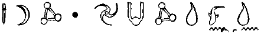

ARTEMİS FOWL’UN GÜNLÜĞÜNDEN ALINTI. DİSK 2. KODLANMIŞTIR.
Son iki yıldaki iş girişimlerim ebeveynsel müdahale olmadan gelişti. Bu süre içinde, Piramitleri Batılı bir işadamına sattım, Leonardo da Vinci’nin kayıp günlüklerinin sahtesini yapıp açık arttırmaya çıkardım ve Peri Halkını kıymetli altınlarının büyük bir bölümünden ayırdım. Ama komplo kurma özgürlüğüm neredeyse sona ermek üzere. Bunları yazarken, babam Rus Mafyasının elinde geçirdiği iki yıldan sonra iyileştiği Helsinki’deki bir hastanede yatıyor. Geçirdiği çetin sınavdan sonra hâlâ baygın ama kısa bir süre sonra kendine gelecek ve Fowlların mali durumunu tekrar kontrol altına alacak.
Fowl Malikânesinde yaşan iki ebeveynle çeşitli illegal maceralarımı fark edilmeden düzenlemem imkânsız olacak. Önceden bu bir sorun değildi çünkü 'babam benden de büyük bir üçkâğıtçıydı ama Annem Fowlların namuslu olması konusunda kararlı.
Bununla beraber, son bir iş için hâlâ zaman var. Annemin onaylamayacağı bir şey için. Peri Halkının da onu onaylayacağım sanmıyorum. Bu yüzden onlara söylemeyeceğim.